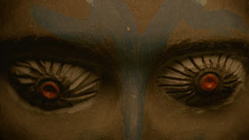

Fünfminutenfratzen

Garegin Vanisian – D 2012 – 6 Min.
Sc+E+P: Garegin Vanisian – DOP: Stefan Neubig – Text: Gary Victor
Speakers: Nicola Gründel, Lionel Boukary-Mory
With excerpts taken from Maya Deren's DIVINE HORSMEN
Super-8 und 16mm auf 35mm Deutsch, französisch
In 2010 Haitian Voodoo objects, formerly part of ritual ceremonies, were exposed at the Ethnological Museum in Dahlem, Berlin. "Statues also die", Alain Resnais stated in 1953, in expositions ritual objects suffer from a loss of aura which means their death. However, Vanisian’s montage leads them to a new spiritual existance, reanimated by the drums of an original Haitian Voodoo music.
Monday 13/10 8:30 p.m. Werkstattkino
Garegin Vanisian, born in 1987 in Russia. Law studies. Co-founder of the association Filmkollektiv Frankfurt in 2013. Works for the Deutschen Filminstitut (DIF) in Frankfurt.
Films: Fort 2009 – Fernsicht 2009 – Erbarmen mit den Liebenden 2012 – Fünfminutenfratzen 2012